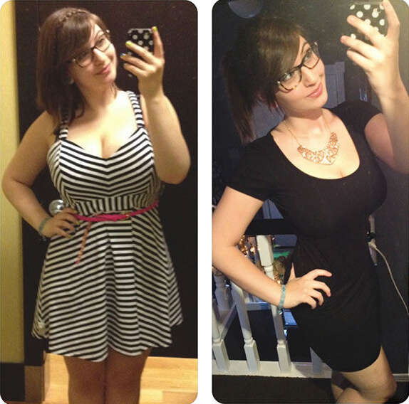
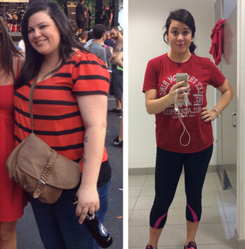

Cel mai important lucru- e talentul, și să iți faci
o siluetă suplă e foarte ușor
«Pregătirea starurilor» astăzi, pentru lumea mondenă - e un proces cu mai multe etape, când din cei mai obișnuiți oameni se fac adevărați idoli cu un aspect perfect și aptitudini vocale, cu o siluetă suplă si plastică.
În această serie de publicații vom vorbi despre principalele secrete și tehnici folosite de casele de producție ce fac adevărate vedete din protejații săi.
Astăzi vom începe cu cea mai frecventă întrebare - cum reușesc participanții talentați de la «fabrica de staruri» să piardă rapid din greutate și să fie deținători de siluete perfect de suple.
Agențiile din Coreea de Sud sunt cu adevărat serioase in legătura cu această întrebare, tinerii sunt innebuniți de băieții și fetele ce au corpuri foarte suple și seamănă cu elfi.
Redactorii noștri au aflat cum are loc acea terapie exotică de slăbire asupra vedetelor din Coreea de Sud . In decurs de 4 săptămâni rațiunea lor la mic dejun și prânz e format doar din fructe aduse de pe insulele Filipine : kivano, cherimoya și rambutan. Aceste fructe curăță organismul in totalitate de toxine și elimină grasimea inutila și dăunătoare, după organismul functioneaza mai bine ca niciodată, in cateva săptămâni se restructurizează anatomia corpului și asta e exact ce doresc să dobândească producătorii de succes.
SECRET -Jun Hyoseong
Concurenta “Fabricii de staruri” Coreene înainte si după
Redacția “Harper’s Bazaar” a mai aflat că pentru comoditatea concurenților de la “fabrica de staruri” a fost elaborat produsul extrem de concentrat în rambutan, kivano și cherimoya. Acesta e de mult timp in arsenalul caselor de producție, sunt și bani din buget alocați pentru el.
Din moment ce testăm personal toate secretele de frumusețe ale vedetelor, timp de o lună, Mariana-redactorul șef al departamentului de frumusețe a administrat picăturile înainte de mic dejun și prânz. Nu era plinuță,dar 5-7 kg in surplus avea. O mare surprindere am avut atunci când ele deja nu mai erau dupa 10-11 zile.Nu a mai administrat după, își făcea griji să nu piarda din diametrul sânilor, dar nici nu a mai fost necesitatea, silueta sa a devenit pur și simplu ideală.
După un asemenea succes, am luat legătura directă cu producătorul și el a fost de acord să facă o mare reducere pentru cititorii noștri și mai ales pentru cei ce de mult timp visau la o siluetă frumoasă, dar din cauza a mai multor motive nu pot să piardă din greutate, sau rezultatele sunt instabile și kg revin înapoi.

Extract
de rambutan
Extract
kivano
Extract
cherimoya
Comandă
Comentarii:
Alexandra-Elena
Sora mea mi-a povestit despre fetele filipine , înainte de concursurile de frumusețe ele țin o dietă bazată pe rambutan și foarte rapid ajung la formele ideale. Iată in anul 2017 iarăși o fată filipină a câștigat Miss Univers.
Postat acum o oră
Adelina
Fetele filipine si cele columbiene, în principiu cel mai des câștigă concursurile de frumusețe.
Postat acum o oră
Florian
Vizitez des insulile Filipine și un ten atât de superb ca al femeilor de acolo nu am intâlnit nicăieri. Poate de asemenea e treaba in aceste fructe?
Postat acum o oră
Maria
Iată de ce vedetele din Coreea de Sud sunt atât de slabe!
Postat acum 2 ore
Toma
Lasă și Psy să bea aceste picături, că nu prea se încadrează in paramentrii lor;))
Postat acum 2 ore
Alina
De ce a fost ascuns de noi acest secret??? Eu am mareee nevoie să slăbesc
Postat acum 3 ore
Stela V
Păi iată, special pentru voi au fost elaborate aceste picături! Apropo, cineva le-a incercat deja?
Postat acum 3 ore
Constanța
Remediul meu preferat și cel mai eficient pe care l-am încercat vreodată. Eu deja nici prin vis nu imi imaginam că voi putea pierde 11 kg, având si o vârstă dupa 50 de ani, chiar și metabolismul meu s-a accelerat.
Postat acum 3 ore
Ovidiu
In principiu mie nici nu îmi plac femeile asiatice. Iată pe femeile noastre frumoase să le facem la fel de suple )
Postat acum 4 ore
Anca
Luați produsul , chiar și americancele slăbesc cu el;) Eu cu siguranță nu sunt americancă , dar în decurs de 4 săptămâni am slăbit cu 19 kg și fără efort suplimentar )vedeți si singuri

Postat acum 4 ore
Lăcrimioara
Recent am citit într-un articol, că oamenii de știința au extras substanța fitoirizinei din fructul rambutan, care e similar hormonului ce se formează in organism in timpul efortului fizic și din acest motiv se slăbește. Deja, aparent că baza acestui preparat e fitoirizina. Vreau și eu să il incerc, am văzut că mai au și reduceri acum.
Postat acum 5 ore
Nicoleta
îmi spuneți vă rog și mie , pe ce site pot cumpăra cu reducere?
Postat acum 5 ore
Magda
Luați doar de la producătorul oficial,pentru că acum sunt o mulțime de produse contrafăcute(
Postat acum 5 ore